Symbolic Links
Symbolic links represent an invisible connection between a transmitter and a receiver. They are used in that form to connect one transmitter and one receiver. However, for special requirements it is also possible to connect one transmitter with several receivers, which will receive the same signal simultaneously.
The SYMLINKMULTIVARSRC and SYMLINKMULTIVARDST function blocks are available.

|
To learn more about how to use symbolic links, watch How to Use Symbolic Links in EcoStruxure Automation Expert. |
SYMLINKMULTIVAR...
The function block SYMLINKMULTIVARSRC serves as the transmitter and the function block SYMLINKMULTIVARDST serves as a receiver. Both function blocks are located within the Runtime.Base library among the service function blocks.
Principle functionality of Symlinks with an example:
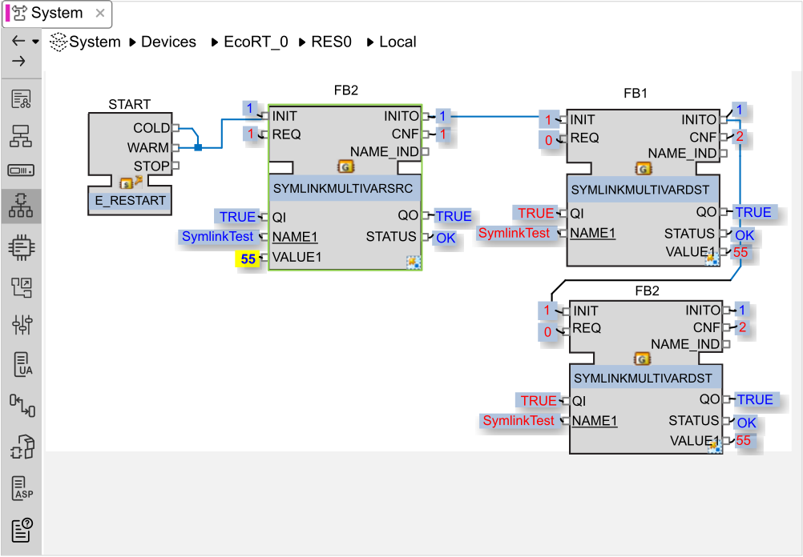
At all corresponding function blocks the same constant has to be added at data input 'NAMEn'. The function blocks have to be initialized and as soon as a value is provided at the data input 'VALUEn' of the transmitter function block and a 'REQ' is triggered, the relevant receiver function blocks will receive the value from the transmitter. This will cause a CNF-Event at the receiver function block.
These function blocks are generic blocks, the number of data inputs and outputs can be defined by pulling the block at the lower right corner of the function block with pressed left mouse button. A right click on the function block body, on the symbol at its lower right corner, opens the interface editor to define the data types at the 'VALUEn' ports. Further information about the function block can be found in the documentation of the function block (select the function block and click F1 or click on Context Help in the Help menu).
Removing Constant Data from a NAME Input
Merely removing a constant data input from a SYMLINKMULTIVARDST block is ineffective to remove the constant value input.
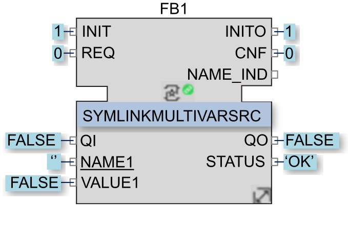
The following examples display the unwanted result of merely removing a constant data input — here ‘NAME2’ — from an input pin:
-
A SYMLINKMULTIVARDST block is configured using two constants ‘NAME1’ and ‘NAME2’:
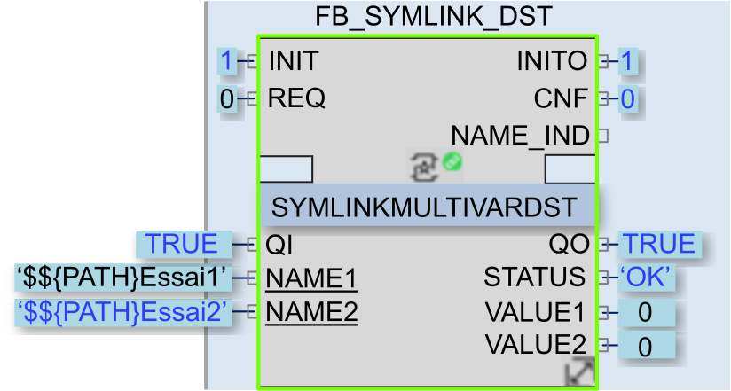
-
After logging out, the constant data link to ‘NAME2” is deleted:
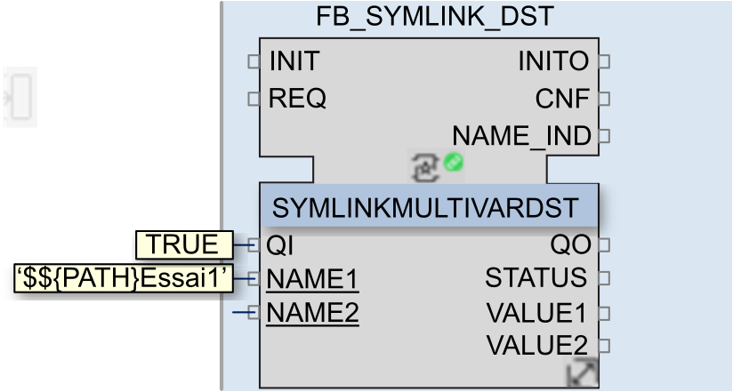
-
After logging back in, an online change action and INIT actions are performed:
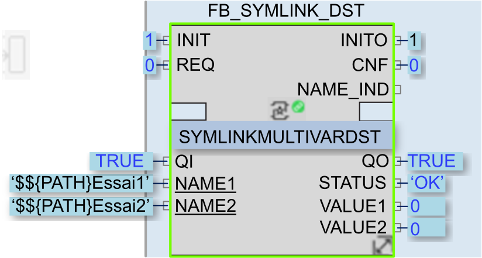
NOTE: The ‘NAME2’ constant data input re-appears. -
If, instead, the solution is re-deployed and initialized, the ‘NAME2” pin remains configured, with an empty constant name:
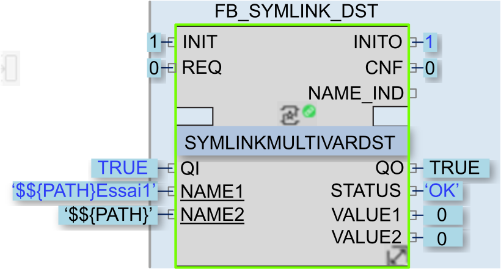
NOTE: Although the constant name does not appear in the input, the solution retains the original constant name and value, and operates as though no edit had been made.
Providing a Connection between HW-IO Ports and the Process Variables
The main purpose of the Symlinks is to provide a connection between HW-IO ports and the corresponding process variables. This provides a simple connection method even across several process levels. As a simple demonstration, and based on the above mentioned example for the principle of operation, we create a CAT (in the image 'DOwriter') which contains only this transmitter function block:
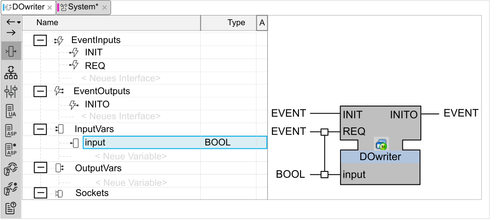
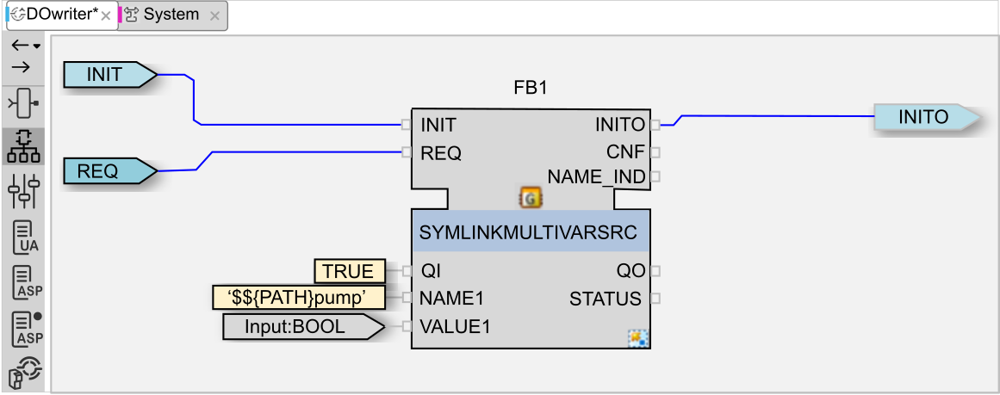
For the use as hardware connections the data input 'NAMEn' and text follow the format '$${PATH}<explicit port name>', including starting and ending apostrophe character. For example,
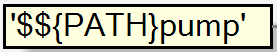
The port of the CAT can be connected now, after it is instanced within a resource, with the HW-CAT, which contains the relevant port and has been instanced by the use of the HW configurator, easily via drag & drop:
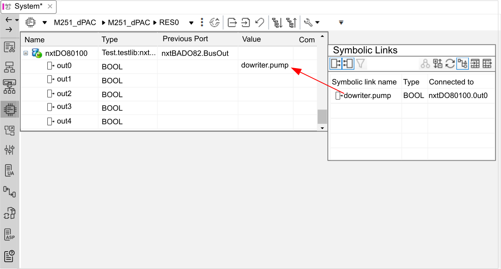
Disconnecting a Function Block Symlink
When a function block is configured with a Symlink, any one of the following actions will disconnect that Symlink:
-
Deleting the function block.
-
Mapping the function block to another device.
-
Un-mapping the function block at the application level by executing the command.
The application will not become non-operational, but may no longer run as expected.
When you perform any of these actions for a function block configured with a Symlink, EcoStruxure Automation Expert displays the following message:
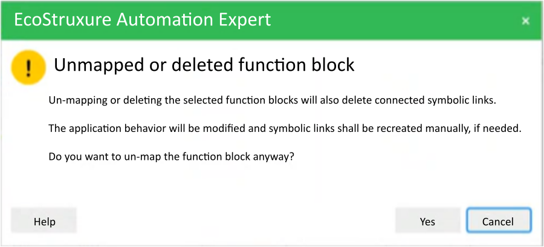
You can click:
-
Cancel to terminate the action and preserve the Symlink.
-
Yes to proceed with the action and disconnect the Symlink.